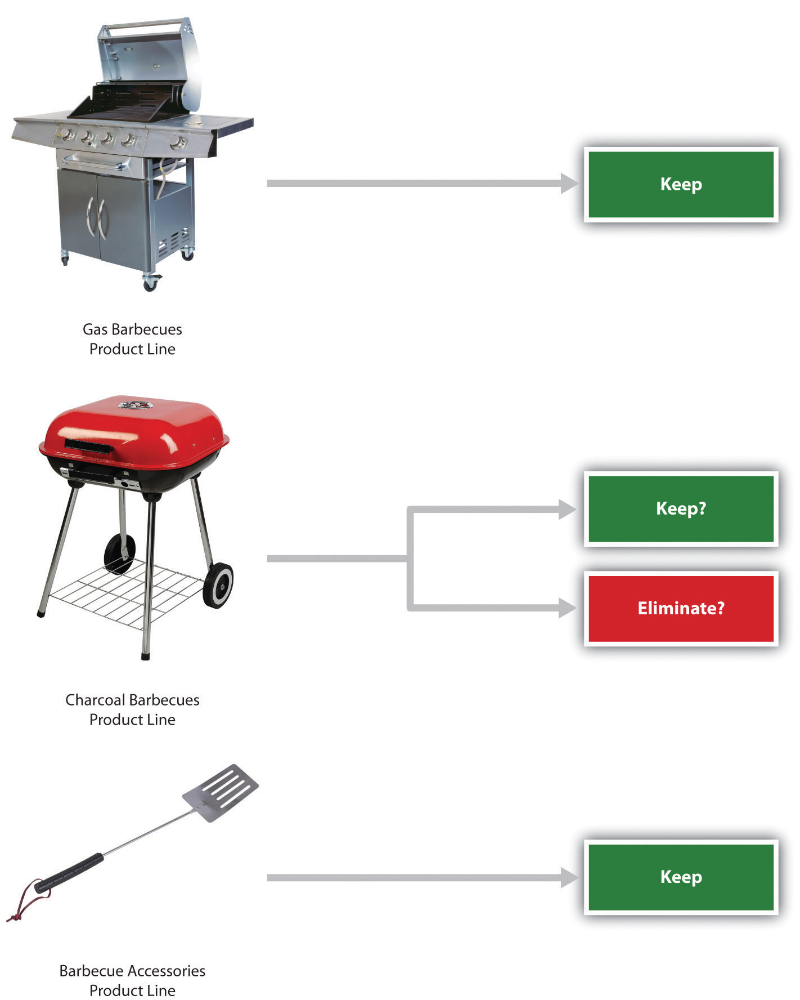
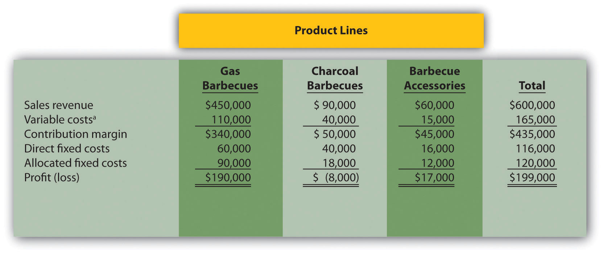
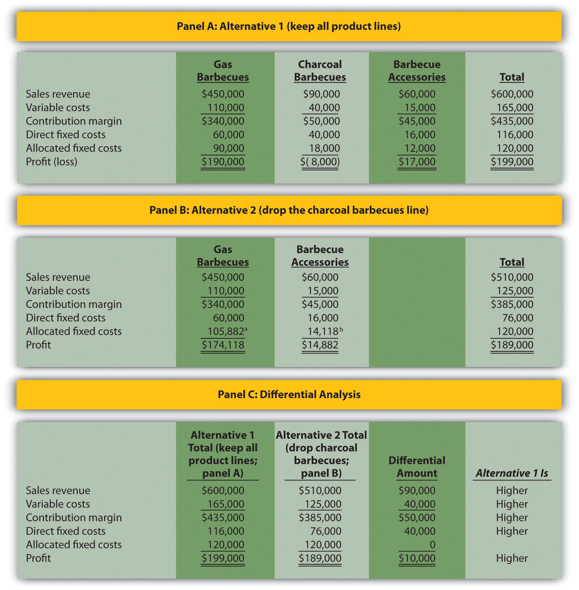
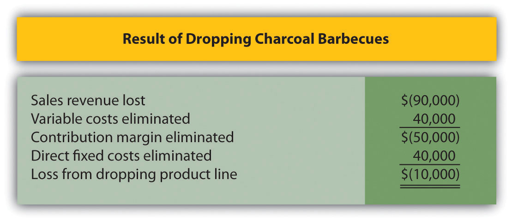
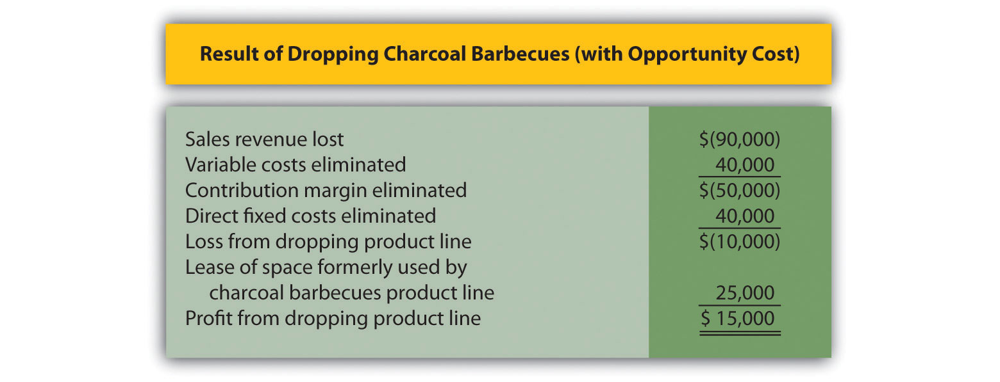

Question: As competitors enter the market and as products go through life cycles, managers often must decide whether to keep or drop product lines. A product lineA group of related products. is a group of related products. The Home Depot, Inc., has many different product lines such as appliances, flooring, and paint products. Ford Motor Co. produces a variety of products such as compact cars, trucks, and tractors. Companies must continually assess whether they should add new product lines, and whether they should discontinue current product lines. Differential analysis provides a format for these types of decisions. How would differential analysis be used to make a product line decision?
Answer: Let’s look at an example of a product line decision. Assume Barbeque Company has three product lines: gas barbecues, charcoal barbecues, and barbecue accessories. Charcoal barbecue sales have declined in recent years, leading management to question whether this product line is worth keeping. Barbeque Company would like to consider two alternatives. Alternative 1 is to retain all three product lines, and Alternative 2 is to eliminate the charcoal barbecues product line. Figure 7.4 "Product Line Decision" shows the decision facing the manager at Barbeque Company: whether to eliminate or keep the charcoal barbecue product line.
Figure 7.4 Product Line Decision
Figure 7.5 "Income Statement for Barbeque Company" presents the income statement for the past year, separated by product line (this is often referred to as a segmented income statement). Carefully examine Figure 7.5 "Income Statement for Barbeque Company". Notice that the charcoal barbecues product line shows a loss of $8,000 for the year. This is the reason management would like to consider dropping this product line.
Figure 7.5 Income Statement for Barbeque Company
*Includes cost of goods sold and other variable costs.
The variable costs in Figure 7.5 "Income Statement for Barbeque Company" are related directly to each product line, and thus are eliminated if the product line is eliminated. That is, all variable costs are differential costs for the two alternatives facing Barbeque Company.
Question: Notice that two lines appear for fixed costs: direct fixed costs and allocated fixed costs. What is the difference between direct fixed costs and allocated fixed costs?
Answer: Direct fixed costsFixed costs that can be traced directly to a product line or customer. are fixed costs that can be traced directly to a product line. Direct fixed costs are often differential costs. For example, the salary of the manager responsible for charcoal barbecues is easily traced to the charcoal barbecues product line. If this product line is eliminated, the product line manager’s salary is also eliminated (unless the product line manager has a long-term employment contract).
Allocated fixed costsFixed costs that cannot be traced directly to a product line or customer, and therefore are assigned to product lines or customers using an allocation process (also called common fixed costs). (also called common fixed costs) are fixed costs that cannot be traced directly to a product line, and therefore are assigned to product lines using an allocation process. Allocated fixed costs are typically not differential costs. For example, rent paid for Barbeque Company’s retail store is allocated to all three product lines because it is not easily traced to each product line. However, the retail store rent likely will not decrease if the charcoal barbecues product line is eliminated (unless the company chooses to move to a smaller, less costly store). The charcoal barbecues’ allocation for rent would simply be reallocated to the other two products. Thus rent for the retail store is an example of an allocated fixed cost that is not a differential cost for the two alternatives facing Barbeque Company.
Question: How are Barbeque Company’s allocated fixed costs assigned to individual product lines?
Answer: Barbeque Company’s total allocated fixed costs of $120,000 are allocated based on sales. Sales revenue for gas barbecues totals $450,000, which is 75 percent of total company sales (= $450,000 ÷ $600,000). Thus 75 percent of all allocated fixed costs are assigned to the gas barbecues product line. This amounts to $90,000 (= $120,000 × 0.75).
Question: Will dropping the charcoal barbecues product line result in higher company profit?
Answer: The differential analysis presented in Figure 7.6 "Product Line Differential Analysis for Barbeque Company" provides the answer. Panel A shows the income statement for Alternative 1: keeping all three product lines. Panel B shows the income statement for Alternative 2: dropping the charcoal barbecues product line. And panel C presents the differential analysis for the two alternatives. The differential analysis in panel C shows that overall profit will decrease by $10,000 if the charcoal barbecue product line is dropped.
Figure 7.6 Product Line Differential Analysis for Barbeque Company
a $105,882 = ($450,000 ÷ $510,000) × $120,000.
b $14,118 = ($60,000 ÷ $510,000) × $120,000.
The Differential Amount column in panel C of Figure 7.6 "Product Line Differential Analysis for Barbeque Company" indicates the company would be better off continuing with all three product lines. However, management may want a more concise explanation of why profit is $10,000 higher when all three product lines are maintained. We provide such an explanation in Figure 7.7 "Summary of Differential Analysis for Barbeque Company", which presents the Differential Amount column shown in panel C of Figure 7.6 "Product Line Differential Analysis for Barbeque Company" along with a brief description for each item. Take a close look at panel C of Figure 7.6 "Product Line Differential Analysis for Barbeque Company", confirm that the Differential Amount column matches Figure 7.7 "Summary of Differential Analysis for Barbeque Company", and review the explanation of the difference.
Figure 7.7 Summary of Differential Analysis for Barbeque Company
Note: Amounts shown in parentheses indicate a negative impact on profit, and amounts without parentheses indicate a positive impact on profit.
Figure 7.7 "Summary of Differential Analysis for Barbeque Company" shows that Barbeque Company will lose sales revenue of $90,000 if it drops the charcoal barbecues product line. However, it saves variable costs of $40,000 and direct fixed costs of $40,000 if it drops the charcoal barbecues product line. Because the $80,000 in cost savings is not enough to make up for the $90,000 loss in sales revenue, profit will decline by $10,000 (= $80,000 − $90,000).
Question: How can the charcoal barbecues product line show a loss of $8,000 in Figure 7.6 "Product Line Differential Analysis for Barbeque Company", while the company as a whole is better off keeping this product line?
Answer: The answer lies within allocated fixed costs. Even though total allocated fixed costs of $120,000 cannot easily be traced to each product line, company management wants each product line manager to be aware of these costs. As a result, it uses an allocation process to assign the costs to product lines. Thus the charcoal barbecues product line is assigned $18,000 in allocated fixed costs even though these costs cannot be controlled by the product line. If the charcoal barbecues product line is eliminated, $18,000 in allocated fixed costs is not eliminated. Instead, $18,000 in costs is assigned to the other two product lines.
In many situations, this increased allocation to other product lines may cause other product lines to appear unprofitable. The message here is to be careful when analyzing segmented information containing cost allocations. Allocated costs are typically not differential costs, and therefore are typically not relevant to the decision.
An alternative view of the decision facing Barbeque Company—whether to keep or drop the charcoal barbecues product line—is simply to calculate profitability of this product line before deducting allocated fixed costs. Figure 7.6 "Product Line Differential Analysis for Barbeque Company" shows a contribution margin of $50,000 for charcoal barbecues. Deduct direct fixed costs of $40,000 and this product line has a remaining profit of $10,000. This explains why Barbeque Company’s overall profit would be $10,000 lower if the charcoal barbecues product line were eliminated. (As discussed previously, the allocated fixed costs are irrelevant to this decision.)
Managers must often consider the impact of opportunity costs when making decisions. An opportunity costThe benefit forgone when one alternative is selected over another. is the benefit foregone when one alternative is selected over another. For example, assume you have the choice between going to school and working. The opportunity cost of attending school is the lost wages from working.
Question: In the case of Barbeque Company, assume the company can lease the space currently being used by the charcoal barbecues product line for $25,000 per year. Thus the opportunity cost (benefit foregone) of keeping the charcoal barbecues is $25,000. How does this affect Barbeque Company’s decision to keep or drop charcoal barbecues?
Answer: Figure 7.8 "Differential Analysis with Opportunity Cost for Barbeque Company" provides the answer by simply adding one item to Figure 7.7 "Summary of Differential Analysis for Barbeque Company". Barbeque Company would increase profits $15,000 by dropping the charcoal barbecues.
Figure 7.8 Differential Analysis with Opportunity Cost for Barbeque Company
Note: Amounts shown in parentheses indicate a negative impact on profit, and amounts without parentheses indicate a positive impact on profit.
Opportunity costs can also be included in the differential analysis format presented in Figure 7.6 "Product Line Differential Analysis for Barbeque Company". Panel C of Figure 7.6 "Product Line Differential Analysis for Barbeque Company" is simply modified to reflect the opportunity cost, as shown.
Question: What is a sunk cost, and how do sunk costs affect differential analysis?
Answer: A sunk costA cost incurred in the past that cannot be changed by future decisions. is a cost incurred in the past that cannot be changed by future decisions. For example, suppose Barbeque Company must dispose of store equipment related to the charcoal barbecues product line if charcoal barbecues are eliminated. The original cost of this store equipment is a sunk cost and should have no bearing on the decision whether to eliminate charcoal barbecues. As a general rule, sunk costs are not differential costs.
Source: Photo courtesy of Paul Sableman, http://www.flickr.com/photos/pasa/5583935536/.
Kmart Sells Stores
The management of Kmart Corp., a mass merchandising company with more than 1,500 stores throughout the United States, agreed to sell 24 stores to Home Depot for $365 million in cash. Julian Day, Kmart’s president and chief executive officer, stated, “We will take advantage of opportunities to create value that include the sale of existing stores.”
In deciding whether to sell the stores, management likely considered the differential revenues and costs associated with keeping the stores versus selling them. Perhaps the stores were not profitable enough to exceed the $365 million in cash that Kmart received from the sale. Large retail companies with many widely dispersed stores commonly review their unprofitable stores on a regular basis and consider closing or selling stores that cannot turn a profit in the near future.
Source: Kmart Corp. press release, June 4, 2004 (http://www.kmartcorp.com).
The following annual income statement is for Austin Appliances, Inc., a maker of electrical appliances:
Austin Appliances is concerned about the losses associated with the blenders product line and is considering dropping this product line. Allocated fixed costs are assigned to product lines based on sales. For example, $56,250 in allocated fixed costs is allocated to the blenders product line based on the blenders product line sales as a percent of total sales [$56,250 = $150,000 × ($750,000 ÷ $2,000,000)]. If Austin Appliances eliminates a product line, total allocated fixed costs are assigned to the remaining product lines. All variable costs and direct fixed costs are differential costs.
Solution to Review Problem 7.3
As shown in the differential analysis given here, Austin Appliances would be better off keeping the blenders product line. Dropping this product line would result in a drop in total profit of $40,000.
a $120,000 = ($1,000,000 ÷ $1,250,000) × $150,000.
b $30,000 = ($250,000 ÷ $1,250,000) × $150,000.
The $15,000 opportunity cost of keeping all three product lines would not affect the company’s decision to keep the blenders product line. If the blenders are dropped, total profit will decrease by $40,000. Lease revenue of $15,000 is not enough to offset the $40,000 decrease in profit. In this scenario, total profit would decrease by $25,000 (= $40,000 − $15,000). This result is presented formally, as follows:
Note: Amounts shown in parentheses indicate a negative impact on profit, and amounts without parentheses indicate a positive impact on profit.